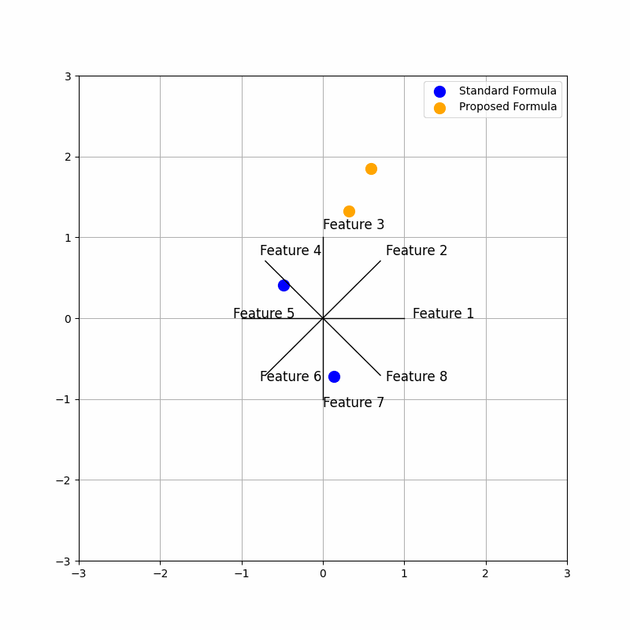

Star Coordinates#
Author : Mohammad Mahdi Khorsand Aalam
Contact : Github Page
Understanding Star Coordinates in Pattern Recognition#
Star coordinates is a tool for visualizing multi-dimensional data. Given a dataset, Star Coordinates allocates an axis on a 2D circle to each attribute in the dataset. Initially, all the lengths and the angles between the axes are equal. Additionally, each data entry is mapped on the 2D space by aggregating the effect of all the axes (attributes).
There are three ways to interact with star coordinates. Adjusting the length of an axis allows the user to increase and decrease the overal effect of a variable. The angle between any two attributes shows how they are related. Finally, the user has the option of turning off an axis to exclude an attribute from the analyis.[1]
Core Concept:#
Polar Coordinate Transformation: Each data feature is mapped to an angle on a unit circle. A weight is then assigned to each feature, which is multiplied by its corresponding value to calculate the polar coordinate (radius). This ensures that more significant features exert a greater influence on the point’s position in the 2D space.[2]
Multidimensional Visualization in 2D Space: High-dimensional data can be represented as a scatter plot in a 2D graph. Each point in this plot corresponds to a data sample, and its position reflects the sample’s characteristics.
Pattern Recognition: By examining the distribution of points on the scatter plot, we can identify patterns and clusters within the data. These patterns can reveal relationships between different data features.
Example:#
Imagine we have a dataset of customers with features like age, income, and spending habits. Using star coordinates, we can map these customers onto a 2D plot. Customers with similar characteristics, such as young adults with high spending habits, might cluster together, revealing a potential market segment.
Advantages:#
Compared to techniques like Parallel Coordinates, Star Coordinates offer a space-efficient and less cluttered visualization, though at the cost of some precision [1]
Benefits of Star Coordinates:#
Visual Exploration: Provides an intuitive way to explore complex datasets.
Dimensionality Reduction: Reduces high-dimensional data to a lower-dimensional space for easier visualization.
Pattern Discovery: Helps identify hidden patterns and relationships within data.
Outlier Detection: Can highlight unusual data points that may warrant further investigation.
Applications:#
Anomaly detection: Identifying unusual data points that deviate from the norm.
Clustering: Grouping similar data points together.
Feature selection: Determining the most important features in a dataset.
Visualization of high-dimensional data: Creating visual representations of complex data for better understanding.
Mathematical Concepts of Star Coordinates#
Imagine you have a dataset with N features (for example, 8 features). Each feature is represented as a vector in a two-dimensional space. For each data point x, composed of N features x1, x2, …, xN, the final coordinate P in the two-dimensional space is calculated using the following equation:
Optimizing Star Coordinate Visualization with User Feedback for High-Dimensional Data#
The innovative approach introduced in the proposed method is dynamic weighting of the axes. Instead of uniformly considering all dimensions, each axis (dimension) is assigned a specific weight, which can vary over time. The proposed formula is defined as:
Key Innovation:#
The primary innovation in this method is the use of dynamic weights for each dimension. By doing so, rather than displaying the data with equal emphasis on all dimensions, we can place more emphasis on specific features. For instance, as the weights (\( \alpha_i \)) change over time (as seen in the animation from the code above), data points shift in a way that highlights the more important features.
These dynamic changes can lead to more precise and insightful visual analysis. This approach is particularly useful when the data has features with varying levels of importance, allowing for better representation by adjusting the weights.
Now it’s time to simulate both the standard and proposed formulas#
import numpy as np
import matplotlib.pyplot as plt
from matplotlib.animation import FuncAnimation
N = 8
angles = np.linspace(0, 2 * np.pi, N, endpoint=False)
data = np.array([
[0.8, 0.2, 0.4, 0.6, 0.1, 0.9, 0.7, 0.5],
[0.5, 0.4, 0.3, 0.9, 0.7, 0.1, 0.6, 0.2]
])
def standard_star_coordinates(data, angles):
x_coords = np.sum(data * np.cos(angles), axis=1)
y_coords = np.sum(data * np.sin(angles), axis=1)
return x_coords, y_coords
def proposed_star_coordinates(data, angles, weights):
x_coords = np.sum(weights * data * np.cos(angles), axis=1)
y_coords = np.sum(weights * data * np.sin(angles), axis=1)
return x_coords, y_coords
fig, ax = plt.subplots(figsize=(8, 8))
scatter_standard = ax.scatter([], [], color='blue', label="Standard Formula")
scatter_proposed = ax.scatter([], [], color='orange', label="Proposed Formula")
ax.set_xlim(-3, 3)
ax.set_ylim(-3, 3)
ax.legend()
ax.grid(True)
def update(frame):
ax.clear()
current_weights = np.sin(np.linspace(0, 2 * np.pi, N) + frame / 10)
x_standard, y_standard = standard_star_coordinates(data, angles)
x_proposed, y_proposed = proposed_star_coordinates(data, angles, current_weights)
for i, angle in enumerate(angles):
ax.plot([0, np.cos(angle)], [0, np.sin(angle)], 'k-', lw=1)
ax.text(np.cos(angle)*1.1, np.sin(angle)*1.1, f'Feature {i+1}', fontsize=12)
ax.scatter(x_standard, y_standard, color='blue', s=100, label='Standard Formula')
ax.scatter(x_proposed, y_proposed, color='orange', s=100, label='Proposed Formula')
ax.set_xlim(-3, 3)
ax.set_ylim(-3, 3)
ax.legend()
ax.grid(True)
ani = FuncAnimation(fig, update, frames=np.arange(0, 100), interval=100)
ani.save('star_coordinates_animation.mp4', writer='ffmpeg')
ani.save('star_coordinates_animation.gif', writer='imagemagick')
plt.show()
MovieWriter ffmpeg unavailable; using Pillow instead.
---------------------------------------------------------------------------
KeyError Traceback (most recent call last)
File E:\MainHomePage\.M_HomePage\Lib\site-packages\PIL\Image.py:2436, in Image.save(self, fp, format, **params)
2435 try:
-> 2436 format = EXTENSION[ext]
2437 except KeyError as e:
KeyError: '.mp4'
The above exception was the direct cause of the following exception:
ValueError Traceback (most recent call last)
Cell In[1], line 53
49 ax.grid(True)
51 ani = FuncAnimation(fig, update, frames=np.arange(0, 100), interval=100)
---> 53 ani.save('star_coordinates_animation.mp4', writer='ffmpeg')
55 ani.save('star_coordinates_animation.gif', writer='imagemagick')
57 plt.show()
File E:\MainHomePage\.M_HomePage\Lib\site-packages\matplotlib\animation.py:1089, in Animation.save(self, filename, writer, fps, dpi, codec, bitrate, extra_args, metadata, extra_anim, savefig_kwargs, progress_callback)
1085 savefig_kwargs['transparent'] = False # just to be safe!
1086 # canvas._is_saving = True makes the draw_event animation-starting
1087 # callback a no-op; canvas.manager = None prevents resizing the GUI
1088 # widget (both are likewise done in savefig()).
-> 1089 with writer.saving(self._fig, filename, dpi), \
1090 cbook._setattr_cm(self._fig.canvas, _is_saving=True, manager=None):
1091 for anim in all_anim:
1092 anim._init_draw() # Clear the initial frame
File ~\AppData\Local\Programs\Python\Python312\Lib\contextlib.py:144, in _GeneratorContextManager.__exit__(self, typ, value, traceback)
142 if typ is None:
143 try:
--> 144 next(self.gen)
145 except StopIteration:
146 return False
File E:\MainHomePage\.M_HomePage\Lib\site-packages\matplotlib\animation.py:245, in AbstractMovieWriter.saving(self, fig, outfile, dpi, *args, **kwargs)
243 yield self
244 finally:
--> 245 self.finish()
File E:\MainHomePage\.M_HomePage\Lib\site-packages\matplotlib\animation.py:515, in PillowWriter.finish(self)
514 def finish(self):
--> 515 self._frames[0].save(
516 self.outfile, save_all=True, append_images=self._frames[1:],
517 duration=int(1000 / self.fps), loop=0)
File E:\MainHomePage\.M_HomePage\Lib\site-packages\PIL\Image.py:2439, in Image.save(self, fp, format, **params)
2437 except KeyError as e:
2438 msg = f"unknown file extension: {ext}"
-> 2439 raise ValueError(msg) from e
2441 if format.upper() not in SAVE:
2442 init()
ValueError: unknown file extension: .mp4
output#

Analysis of Code Sections:#
The time change introduces a dynamic modification to the proposed star coordinates through the current_weights. These weights are based on a sine wave that shifts over time, specifically depending on the value of frame. This shifting sine wave introduces variability in the weight given to each feature in the proposed star coordinates calculation. As a result, the animation shows how the star coordinates evolve when the contribution of different features varies over time.
By observing the animation:
Standard Coordinates (blue) remain static, as they do not depend on time. Proposed Coordinates (orange) change over time, showing the influence of dynamic weighting through the sine function. The movement helps visualize how different features contribute to the data representation under varying weights.
1. Defining the Data: The following section defines the hypothetical 8-dimensional data:
data = np.array([
[0.8, 0.2, 0.4, 0.6, 0.1, 0.9, 0.7, 0.5],
[0.5, 0.4, 0.3, 0.9, 0.7, 0.1, 0.6, 0.2]
])
These two vectors represent two points (objects) in an 8-dimensional space, where each element corresponds to the value of a feature.
2. Calculating Standard Coordinates:
def standard_star_coordinates(data, angles):
x_coords = np.sum(data * np.cos(angles), axis=1)
y_coords = np.sum(data * np.sin(angles), axis=1)
return x_coords, y_coords
This function calculates the coordinates using the standard Star Coordinates formula. By multiplying feature values with the sine and cosine of the angles, the Cartesian coordinates (x and y) are derived. Here, each feature’s weight is assumed to be 1.
3.Calculating Proposed Coordinates:
def proposed_star_coordinates(data, angles, weights):
x_coords = np.sum(weights * data * np.cos(angles), axis=1)
y_coords = np.sum(weights * data * np.sin(angles), axis=1)
return x_coords, y_coords
This function is similar to the previous one, but the weights for each feature dynamically change with each frame. This is done by applying a sinusoidal function to generate varying weights, allowing for more flexibility in the data representation.
4. Main Animation Structure:
def update(frame):
ax.clear()
# Changing weights in each frame
current_weights = np.sin(np.linspace(0, 2 * np.pi, N) + frame / 10)
# Calculate coordinates
x_standard, y_standard = standard_star_coordinates(data, angles)
x_proposed, y_proposed = proposed_star_coordinates(data, angles, current_weights)
# Plotting axes (features) as radii of the circle
for i, angle in enumerate(angles):
ax.plot([0, np.cos(angle)], [0, np.sin(angle)], 'k-', lw=1)
ax.text(np.cos(angle)*1.1, np.sin(angle)*1.1, f'Feature {i+1}', fontsize=12)
# Plotting the data
ax.scatter(x_standard, y_standard, color='blue', s=100, label='Standard Formula')
ax.scatter(x_proposed, y_proposed, color='orange', s=100, label='Proposed Formula')
ax.set_xlim(-3, 3) # Extending x-axis range
ax.set_ylim(-3, 3) # Extending y-axis range
ax.legend()
ax.grid(True)
This function updates the animation at each frame:
New weights for each feature are calculated using a sinusoidal function.
The coordinates of the data points are calculated using both the standard and proposed formulas.
The data points are plotted in two different colors for comparison.
The feature axes (radii) are drawn from the center of the circle, and each radius is labeled with the corresponding feature.
5. Code Innovation:
Dynamic Weights in the Proposed Formula: In each frame, the feature weights change using a sinusoidal function. This innovation visualizes how the variation of weights affects the coordinates and representation of the data points.
Combining Two Formulas: Both the standard and proposed coordinates are visualized in one animation, allowing for a clear comparison and understanding of the differences between these two methods.
Dynamic Visualization: By animating and changing the weights over time, the code provides a more interactive and flexible way to visualize how dynamic weights impact the projection of the data.
Proposed Star Coordinates (dynamic with weights) :#
For each data point, the proposed star coordinates are computed with weights that change over time. These are given by:
x_coords = np.sum(weights * data * np.cos(angles), axis=1)
y_coords = np.sum(weights * data * np.sin(angles), axis=1)
alpha_i(t) are the weights that change over time, calculated as:
In the code, the weights are calculated as follows:
current_weights = np.sin(np.linspace(0, 2 * np.pi, N) + frame / 10)
Here, \(\texttt{np.linspace}\) is used to generate the angles \(\frac{2\pi i}{N}\), and then \(\frac{t}{10}\) is added to each value. Therefore, the weights are correctly defined.
To read more#
1. “Star Coordinates: A Multi-dimensional Visualization Technique with Uniform Treatment of Dimensions” by E. Kandogan This is one of the foundational papers on Star Coordinates, discussing how this visualization method enables users to interpret high-dimensional data by projecting it onto a 2D space, treating all dimensions uniformly. It’s an essential read if you want to understand the core principles behind Star Coordinates. Star Coordinates: A Multi-dimensional …
2. Laplacian Star Coordinates for Visualizing Multidimensional Data” by Tran Van Long explores a novel visualization method called Laplacian Star Coordinates (LSC) This approach enhances traditional star coordinate systems by integrating the Laplacian matrix, which helps to preserve the structural relationships between multidimensional data points. LSC aims to reduce distortion and provide better clarity when projecting high-dimensional datasets into two-dimensional space, making patterns and clusters more visually interpretable. Laplacian Star …
References#
1. Star Coordinates: A Multi-dimensional Visualization Technique with Uniform Treatment of Dimensions https://people.cs.vt.edu/~north/infoviz/starcoords.pdf
2. The Polar Coordinate System https://math.libretexts.org/Bookshelves/Precalculus/Book%3A_Trigonometry_(Sundstrom_and_Schlicker)/05%3A_Complex_Numbers_and_Polar_Coordinates/5.04%3A_The_Polar_Coordinate_System